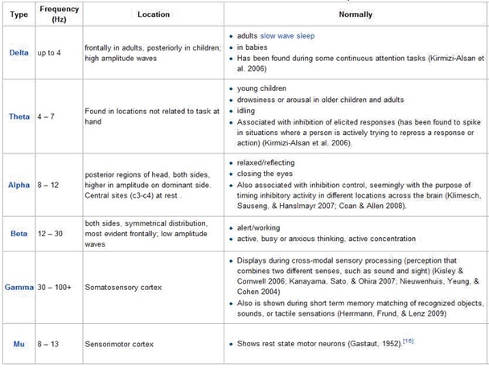

Experimental Objective- Record EEG. At the same time, Various EEG frequency components and their PSD are calculated.
Calculation method- Frequency bandpass filters are used for every different frequency components of EEG and Welch periodogram estimation method is used to calculate PSD.
Scientific principle- The power spectral density functions give a useful, preliminary means of description. The chief difficulty in interpretation is due to the fact that the length of an EEG record is finite whereas the mathematical description is based on infinity. With a finite length of EEG record, accuracy in a statistical sense can only be achieved if frequency resolution is sacrificed. Instead of examining power of discrete frequency components, which would require infinite time, it is necessary to measure power contained in a band of frequency, thereby performing a smoothing operation. Power spectral density of EEG can be used to determine the strength of the EEG signal which means more the brain activity more is the value of PSD. Power spectral density of frequency components is also calculated.
Following are the frequency components:-

Application – PSD of an EEG signal can be used to determine the strength of the signal. Which when calculated under different environments and cases can be used in various applications. Some of the applications are:-
- PSD changes in EEG during mathematical mental arithmetic and Eye opening.
- Discriminating mental states
- Effects of age and Gender on sleep
- Changes in EEG Power Spectral Density in Healthy and Tetraplegic Patients during a Motor Imagery Task

1) To study the wave shapes of EEG signals recorded under 10 different channels.
3) To review output graph for different frequency components such as Delta, Alpha, Beta and Gamma.
4) To study output graph for different PSD graphs of Alpha, Beta, Gamma and Delta.
4) To assess your knowledge about the experiment by answering a questionnaire at the end of the experiment.

1. BIOPAC MP150 system
2. EEG-100C BIOPAC Amplifiers
3. AcqKnowledge Software (BIOPAC)
4. EEG Leads
5. Digital EEG Patient Simulator


The quiz is included in the standalone application.

Procedure for the experiment is shown in the following video (Skip to 1:35).